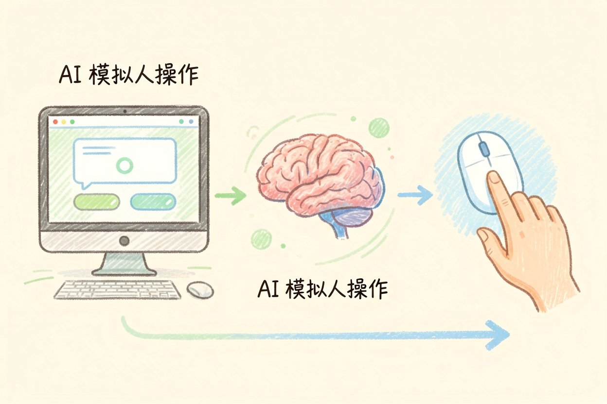
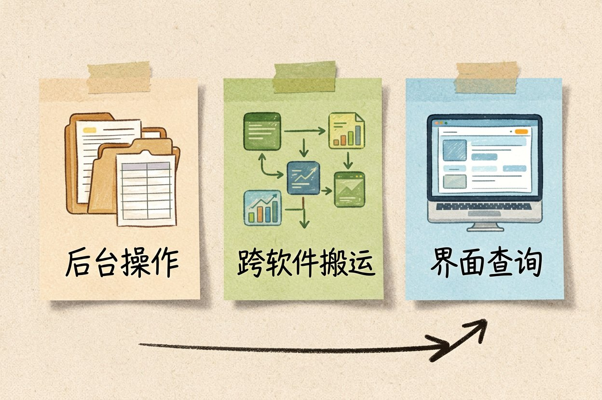
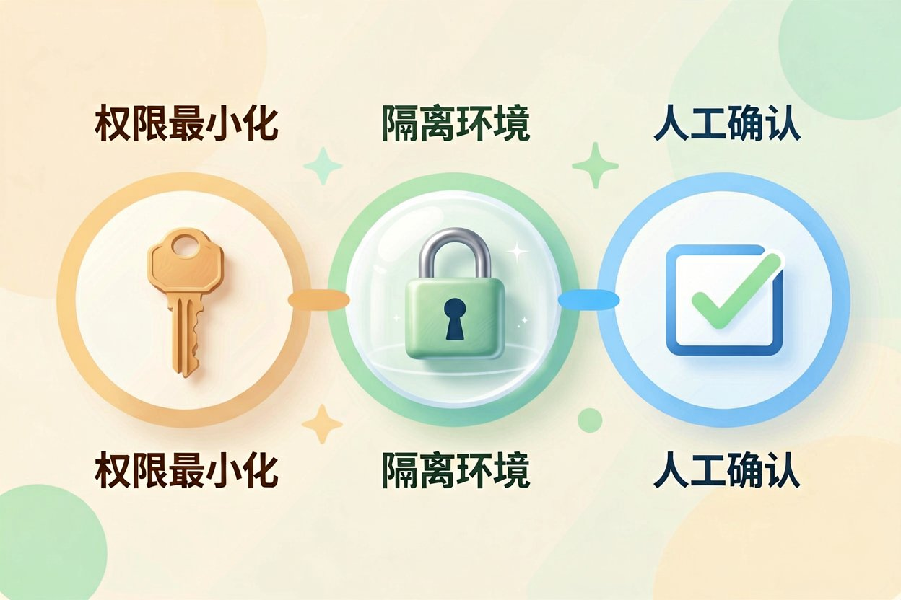
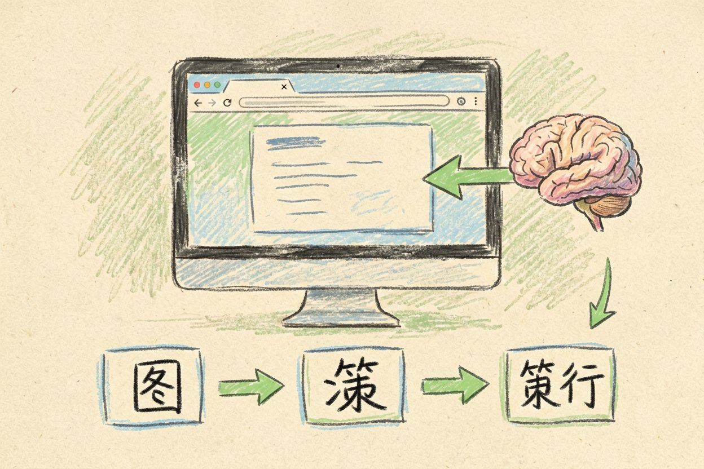
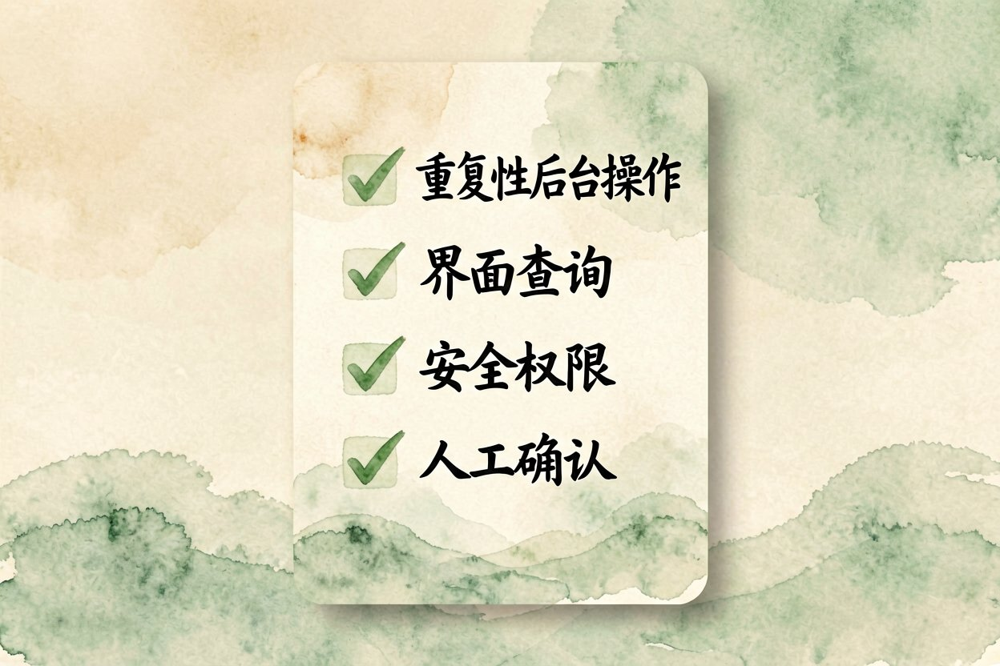

AI 怎么操控电脑？让模型替你点鼠标
想让 AI 替你点鼠标、填表单、进后台导数据？这不再是科幻，大模型已经能看懂屏幕并自己操作。
AI 操控电脑是什么：一句话解释

AI 操控电脑，就是让大模型像人一样操作你的鼠标和键盘，自己打开软件、点按钮、填表单。它先截图看懂当前画面，再决定下一步点哪里。整个过程你能在屏幕上实时看着。
这类能力常被称为「计算机使用」（computer use）。它和普通的对话式 AI 不同：对话 AI 只给文字建议，操控电脑的 AI 会真正去动你的系统。想了解它会动到哪些部件，可以看AI 智能体是什么。它底层往往依赖MCP 协议是什么来对接各种软件。
它能替你做什么：三类典型任务

第一，重复性的后台操作。比如每天登录后台、导出一张报表、重命名一批文件。这些步骤固定，最适合交给它。
第二，跨软件的搬运。把 A 系统的数据复制到 B 系统，中间要切换好几个窗口，人工做容易错，AI 按步骤走反而稳。
第三，带界面的查询。让它打开某个网页，读出上面的数字，整理成表格发给你。它不靠接口，靠「看屏幕」就能办。
任务：打开浏览器，进入内部后台，导出自昨天的订单报表，
保存到桌面「订单」文件夹。
约束：只在当前窗口操作；遇到登录失效立刻停下等我；
不要关闭任何其他程序。上手前先设好三道安全闸

第一道闸是账号权限。别用管理员账号去跑它。给它一个权限最小、动不了核心数据的普通账号，出事也伤不到要害。
第二道闸是隔离环境。能在虚拟机或备用电脑上跑，就别用日常主力机。真要跑在主力机，至少把银行、聊天、公司机密软件先关掉。关于数据边界，见AI 与数据隐私。
第三道闸是人工确认。关键动作设成「做完一步问一次」。它每点一下重要按钮前先等你点头，错了能立刻叫停。
第一次让它点鼠标的实操步骤

先把任务写具体。别只说「帮我整理文件」，要说清文件在哪、按什么规则改名、放到哪个目录。指令越具体，它越不容易跑偏。
再让它从小活开始。第一单就让它导出一张报表，看着它一步步操作。确认它理解正确，再慢慢加难度。
最后留好退路。操作前先截图存档，万一它点错，你能对照还原。更多上手场景可以参考AI 日常用法，挑最省心的那类先试。
哪些活它其实干不好
验证码和人机校验它常卡住。遇到滑动拼图、短信验证，它要么过不了，要么要你接手，这时候它反而拖慢你。
需要强判断的活它也勉强。比如「挑出这堆邮件里最紧急的三封」，它分不清轻重，还是你来看更快。
界面一变它就懵。网站改版、弹窗位置移动，它按旧坐标点会点空。所以把它用在界面稳定、步骤固定的流程上最值。
别把账号密码写进任务里让它自己登录，也别让它碰涉及钱的页面。AI 操控电脑只是帮你省力的工具，真正要守住的底线，还是你手里的权限和确认键。

本文信息核对于 2026-08-14。AI 产品的价格、免费额度与功能变动频繁，实际以各工具官网当前说明为准。